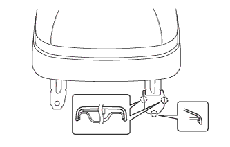
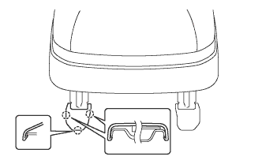
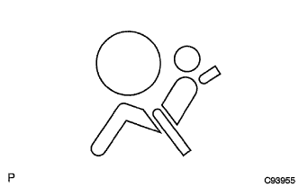

Front Seat Assembly RH (Power Seat Type) Installation |
| 1. Install Front Seat Assembly RH |
Place the front seat assembly RH in the vehicle, and align the adjuster pins with the holes on the vehicle side.
Connect the connectors.
Connect the battery negative terminal.
Operate the power seat switch knob (for slide & vertical) to move the front seat assembly RH to the rearmost position.
 |
Temporarily install the front side of the front seat assembly RH with the 2 bolts.
Operate the power seat switch knob (for slide & vertical) to move the front seat assembly RH to the frontmost position.
 |
Temporarily install the rear side of the front seat assembly RH with the 2 bolts.
Tighten the 2 rear side bolts of the front seat assembly RH in the order of inner → outer.
Operate the power seat switch knob (for slide & vertical) to move the front seat assembly RH to the rearmost position.
Tighten the 2 front side bolts of the front seat assembly RH.
Operate the power seat switch knob (for slide & vertical) to move the front seat assembly RH to the frontmost position.
| 2. Install Seat Track Bracket Cover Inner RH |
 |
Engage the 2 claws to install the seat track bracket cover inner RH.
| 3. Install Seat Track Cover Outer RH |
 |
Engage the 2 claws to install the seat track cover outer RH.
| 4. Install Seat Track Bracket Cover Inner Front RH |
Operate the power seat switch knob (for slide & vertical) to move the front seat assembly RH to the rearmost position.
 |
Engage the 3 claws to install the seat track bracket cover inner front RH.
| 5. Install Seat Track Bracket Cover Outer Front RH |
 |
Engage the 3 claws to install the seat track bracket cover outer front RH.
| 6. Install Front Seat Headrest Assembly |
| 7. Inspect Power Seat Operation |
Check that each adjustment function (slide, front vertical, rear lifter, reclining) operates when each power seat switch is operated.
| 8. Inspect Seat Belt Function |
)| 9. Inspect Airbag Warning Light |
 |
Check whether the warning light comes on when the IG is turned ON.
Check that the warning light goes off approximately 6 seconds after the IG is turned ON.
| 10. Setting Procedure When Disconnecting/Reconnecting Battery Terminal |
)